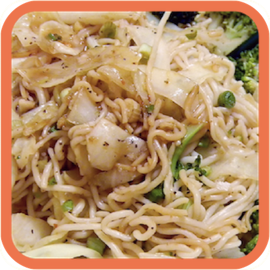
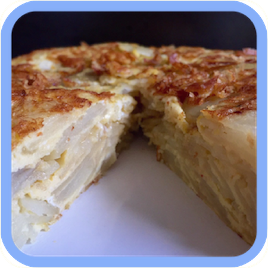
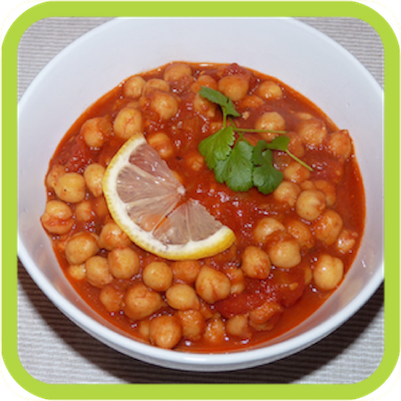
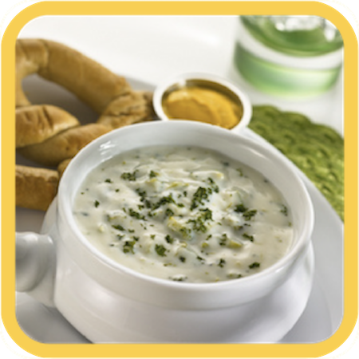
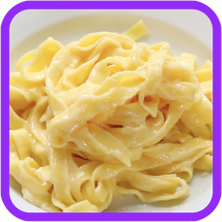
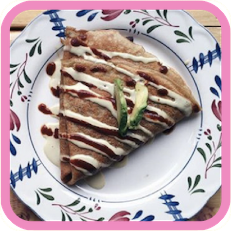

M
o
o
d
.
M
e
a
l
s
How are you feeling today?

Ginger Noodles
- 12 oz bok choy
- 1 oz ginger
- 8 oz noodles
- 2 tbsps peanut oil
- 1/4 cup & 1 1/2 tbsp soy sauce
- 2 tbsps rice vinegar
- 1/2 cup sliced scallions
- 3 finely chopped garlic cloves
- 1 1/2 tsp sesame oil
- 2 tbsps sesame seeds
- cook bok choy tops and steams separately
- peel and finely chop 1/2 of ginger
- slice rest of ginger into matchsticks
- cook noodles according to directions
- heat 1 tbsp peanut oil in skillet & stir in 1/2 scallions, chopped ginger, and garlic. cook until fragrant
- add bok choy stems, cook for about 2 mins, add tops
- add noodles, 1/4 cup of soy sauce, & rice vinegar
- cook & garnish
Restart

Spanish Tortillas
- 2 potatoes
- 3-4 tbsps olive oil
- 4-5 eggs
- thinly slice potatoes
- heat olive oil and cook until translucent
- break up as slices soften
- whisk eggs and finished potatoes together
- cook in pan again
- flip using a plate on top and serve
Restart

Chana Masala
- 2 tbsps olive oil
- 2 garlic cloves (finely chopped)
- 1 large onion (finely sliced)
- 5 tsps ginger (grated)
- 1 tsp salt
- 2 tsps ground coriander
- 1 tsp hot chili powder
- 4 tsps ground cumin
- 1 1/2 tsp ground tumeric
- 2 tsps garam masala
- 5 cups cooked chickpeas
- 2 tsps sugar
- 800g plum tomatoes
- 2 cups cooked basmati rice
- cilantro to garnish
- heat oil in heavy bottom pot and fry onion until translucent on low heat
- add garlic & ginger, stir but don’t burn
- add spices & stir ~1-2 mins
- add tomatoes, chick peas, 1/2 tsp salt, & 1/2 - 1 cup of water
- let simmer ~20-30 mins to thicken
- serve with rice and garnish
Restart

Broccoli Cheddar Soup
- 1 tbsp butter
- 1 chopped onion
- 1/4 cup melted butter
- 1/4 cup flour
- 2 cups milk
- 2 cups chicken stock
- 1 1/2 cups broccoli
- 1 cup carrots
- 1 thinly sliced celery stick
- 2 1/2 cups shredded cheddar cheese
- melt butter in skillet over med/high heat
- saute onion in butter ~5 mins
- whisk melted butter & flour in large saucepan over low/med heat until flour loses granular texture
- gradually pour milk in and whisk constantly
- add chicken stock, simmer ~20 mins
- add vegetables, simmer another ~20 mins
- add cheese & serve once melted
Restart

Fettuccine Alfredo
- 1 small onion, minced
- 6 garlic cloves, minced
- 1/3 cup olive oil
- 1/2 stick of butter
- 1/2 pack of cream cheese (4 oz)
- 2 cups milk or heavy cream
- 1/2 cup parm
- 1/2 cup parsley
- 1/4 cup pasta water
- desired amount of fettucine
- 1 tsp salt
- 1 tsp pepper
- 1 tsp onion powder
- 1 tsp garlic powder
- start cooking pasta
- add garlic & onion to heated pan with oil
- add butter & let melt
- add cream cheese, milk/heavy cream, parm, & parsley
- add spices & pasta water
- let sauce come to a boil then add pasta & serve
Restart

Crepes
- 1 cup flour
- 2 eggs
- 1/2 cup milk
- 1/2 cup water
- 1/4 tsp salt
- 2 tbsp melted butter
- whisk flour & eggs
- mix in milk & water
- add salt & butter
- mix until smooth
- heat lightly oiled pan over med heat
- cook ~2 mins each side
- brush with melted butter & serve
Restart